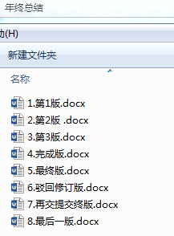

如果你用Microsoft Word写过长篇大论，那你一定有这样的经历： 想删除一个段落，又怕将来想恢复找不回来怎么办？有办法，先把当前文件“另存为...”一个新的Word文件，再接着改。 改到一定程度，再“另存为...”一个新文件，这样一直改下去，最后你的Word文档变成了这样：

过了一周，你想找回被删除的文字，但是已经记不清删除前保存在哪个文件里了，只好一个一个文件去找，**真麻烦** 。
看着一堆乱七八糟的文件，想保留最新的一个，然后把其他的删掉，又怕哪天会用上，还不敢删，**真郁闷** 。
更要命的是，有些部分需要你的财务同事帮助填写，于是你把文件Copy到U盘里给她（也可能通过Email发送一份给她），然后，你继续修改Word文件。一天后，同事再把Word文件传给你，此时，你必须想想，发给她之后到你收到她的文件期间，你作了哪些改动，得把你的改动和她的部分合并，**真困难** 。
于是你想，如果有一个软件，不但能自动帮我记录每次文件的改动，还可以让同事 协作编辑 ，这样就不用自己管理一堆类似的文件了，也不需要把文件传来传去。如果想查看某次改动，只需要在软件里瞄一眼就可以，岂不是很方便？
这个软件用起来就应该像这个样子，能记录每次文件的改动：
版本 用户 修改 时间
1 张三 增加了用户管理功能 2015年1月3日12:14:12
2 张三 删除了用户管理功能 2015年6月3日14:14:34
3 李四 增加了文章管理功能 2015年8月3日18:14:54
4 张三 增加了文章查询功能 2015年10月3日21:14:33
这样，你就结束了手动管理多个“版本”的史前时代，进入到版本控制的21世纪。
GIT提供以下功能
备份文件
类似于用优盘网盘备份电影。我们的代码也需要备份。修改完了以后提交给版本库进行保管，哪一天代码没了也可以找回来。 比如我们打游戏就要存档，万一挂了还可以从上个存档的地方重玩。
记录历史
和网盘不同，网盘保留的是最新的状态，历史的记录都没有了，修改的记录也都找不回来了 我想知道文件里的哪一行是我哪一天加进去的。网盘的优盘是不知道的。 但版本管理工具会记录是哪个人，在什么时候，修改了什么东西。
回到过去
如果我有一天不小心删除了某个文件，我们可以通过历史备份找回来
多端共享
手机 PAD 都可以共享代码
团队协作
多人协作，处理冲突
开源协作
看别人的开源代码 开源自己的项目